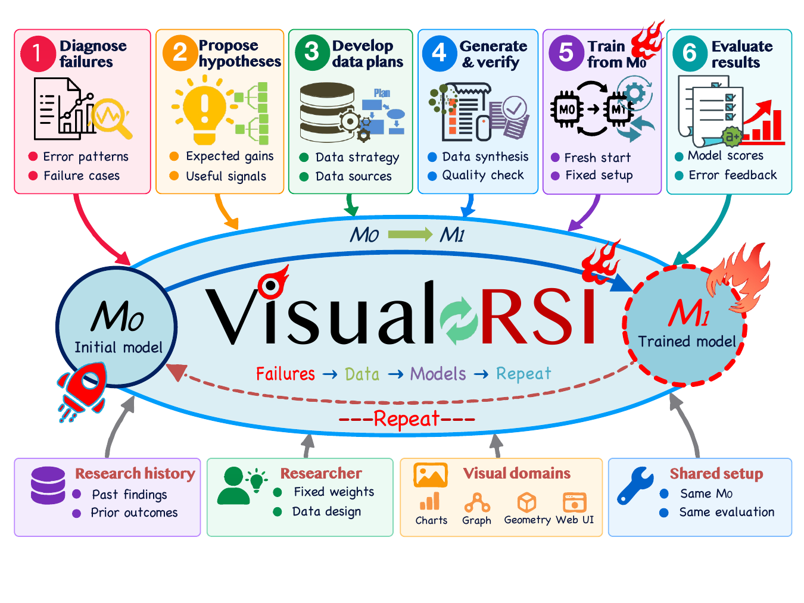
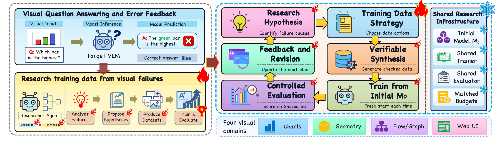
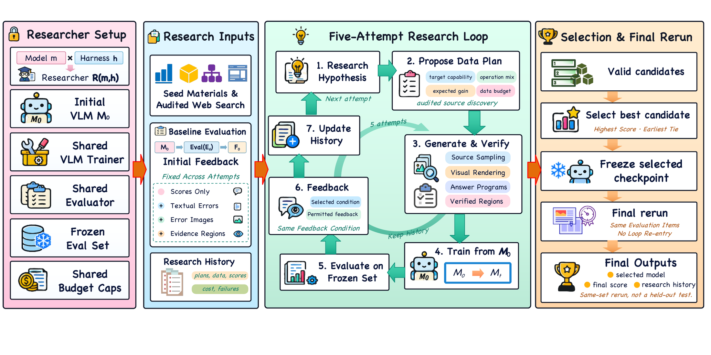
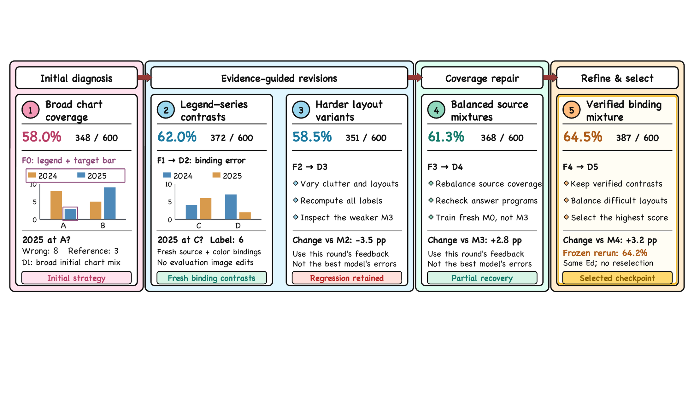
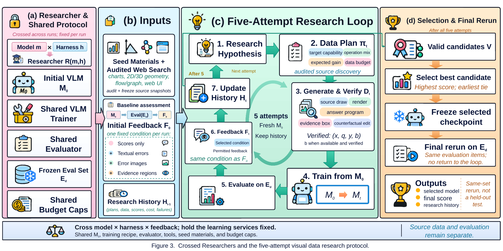

VISUAL DOMAINS04Charts · Geometry · Flow/Graph · Web UI
CROSSED CONFIGS287 inference models × 4 research harnesses
RESEARCH LOOP5 attempts每次从同一份 M0 重新训练
LOCAL CHECKS171 + 536图表构造与成对操作检查，不等于模型实证
01 / RESEARCH QUESTION
从“视觉答错了”走向“应该怎样改数据”
一般的视觉问答评测只问模型答案是否正确。Visual-RSI 把研究对象换成数据设计本身：同一个错误答案背后可能是算术错误、坐标轴误读、图例与系列的绑定错误，或是模型没有把网页元素与操作目标对应起来。不同失败原因需要不同训练干预，盲目增加数据量并不能说明能力得到修复。
论文因此把目标模型和研究者 Agent 分开：研究者负责观察失败并设计数据，目标视觉语言模型负责接受训练；评价的是训练后的目标模型，而不是研究者自己能否回答视觉问题。

Figure 1 / 研究对象。 失败证据进入研究者 Agent，数据经过构造和验证后训练一个独立的目标 VLM；模型结果与研究者的推理能力分开测量。
02 / TASK AND FRAMEWORK
不是自我反思，而是可控的数据研究闭环

Figure 2 / 任务总览。 左侧是普通视觉问答；右侧是从目标模型的错误出发，提出研究假设、生成可验证数据、从共同初始化训练并在固定评价集上比较。
01Diagnose failures记录错误模式、失败样本和可观察的视觉证据。
02Propose hypotheses把错误归因成能力缺口与预期收益假设。
03Generate & verify选择数据操作、生成样本并检查答案和证据区域。
04Train from M0每个候选从相同初始权重训练，再在固定集合评测。
四类视觉任务
- Charts：结构化表格、坐标轴、图例和数值关系；
- 2D/3D Geometry：空间关系与几何构造；
- Flow / Graph：节点、边和流程逻辑；
- Web UI：静态截图上的组件定位与界面理解。
可验证的数据操作
- 修改柱形图的数值时，自动重算答案；
- 颜色或绑定置换必须保持语义契约一致；
- 反例和对照样本保留源状态、改动因素和证据区域；
- 排除评价图片、答案和标识符的污染。
03 / RESEARCH PROTOCOL
共同初始化让“数据干预”可以被比较
Visual-RSI 的核心控制不是让 Agent 无限迭代，而是把每个候选数据策略放在相同的训练起点、训练配方和评价集合上。研究历史可以积累，但候选模型权重不继承上一轮，从而把“研究计划变好了”和“模型偶然继承了上一轮状态”区分开。

Figure 3 / 研究协议。 模型 × harness 交叉运行；每一轮由研究历史和允许的诊断反馈生成数据计划，候选模型都从 M0 训练，再回到冻结评价集。
| 控制项 | 论文中的设置 | 要回答的问题 |
|---|
| 研究者组合 | 7 个推理模型 × 4 个 harness，共 28 种配置 | 模型能力与运行框架的作用是否能拆开看？ |
| 反馈消融 | 只有分数 / 文本错误 / 错误图片 / 验证证据区域 | 更丰富的诊断信息是否带来更好的数据设计？ |
| 训练方式 | 目标模型从同一个 M0 重新训练；每条轨迹 5 次尝试 | 改进来自数据策略，还是来自继承和选择波动？ |
| 评价集合 | 研究用集合、迁移集合、通用视觉集合分别记录 | 训练收益是否迁移，而不是只记住研究过的题目？ |
04 / VERIFIABLE DATA CONSTRUCTION
“生成了数据”还不够，数据必须留下可检查的契约
图表原型的局部验证
论文报告一个图表构造原型：14 个作者编写 fixture 通过 171 项检查，24 对操作开关匹配样本通过 536 项检查。这些检查验证答案重算、证据区域一致性和操作契约。
读法：这是数据构造层的本地检查，不是研究者诊断能力，也不是目标 VLM 已经学会视觉推理的证据。
从错误到干预的映射
- 数值读错 → 数值变换 + 程序化答案；
- 图例绑定错 → 类型安全的颜色/系列置换；
- 边界理解错 → 对照轮廓和几何证据；
- 界面定位错 → 组件树、截图和静态操作目标。
05 / RESULTS AND EVIDENCE BOUNDARY
论文展示了研究协议，但当前不应把模拟结果写成实证结论

Figure 5 / 研究案例。 展示一条从错误观察到数据策略和模型分数的完整轨迹。

Archived design material。 这是本地图源归档中的边界演化设计素材，不是当前论文稿的正式 Figure；页面保留它是为了展示研究构造过程。
必须保留的证据边界：论文当前明确写明主实验模型结果为 simulated rather than empirical findings；真实验证需要独立执行。网页因此将“协议已实现”“局部构造检查”“模型结果待实证”分开呈现。
06 / RELATED WORK AND CONTRIBUTION
Visual-RSI 试图补上的位置
与已有工作的差别
RSIBench-Data 和 DataEnvGym 已经把数据研究、教师—学生环境或视觉任务纳入 Agent 流程；Self-Instruct、STaR 和 Self-Refine 则分别代表生成数据、推理自训练和推理时修正。Visual-RSI 的角度是把视觉失败证据、可验证构造、模块化研究者和共同初始化训练放进一个可审计协议。
可形成的贡献
- 视觉数据干预的可验证操作接口；
- 模型 × harness 交叉的共同初始化研究环境；
- 把分数、文本错误、错误图片和证据区域做成受控消融；
- 明确区分“数据构造正确”“模型得到提升”和“提升发生迁移”。